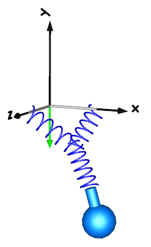

ConnectionOfLineForcesConnection of LineForces |
|
Information
This information is part of the Modelica Standard Library maintained by the Modelica Association.
Line force elements, such as a Spring, are usually connected between two parts. In fact, this is the only possibility in most multi-body programs. In an equation based system like Modelica, more general connections are possible. In particular 3-dimensional line force elements can be connected together in series without having a body with mass at the connection point. This is advantageous since stiff systems can be avoided, say, due to a stiff spring and a small mass at the connection point. For an example, see model ThreeSprings:

Here, three springs are connected together at one point, without having a body at the connection point of the springs. There is one difficulty: In such a situation the orientation object at the connection point is undefined, because the springs do not transmit torques. Translation will therefore fail, if three springs and a body are connected together in this way. To handle such a case, all line force elements have flags "fixedRotationAtFrame_a" and "fixedRotationAtFrame_b" in their "Advanced" parameter menu. For example, if "fixedRotationAtFrame_b = true", the orientation object at frame_b is explicitly set to a null rotation, i.e.,
frame_b.R = Modelica.Mechanics.MultiBody.Frames.nullRotation();
This means that the coordinate system in the connection point of the three springs is always parallel to the world frame. When this option is selected, the corresponding frame in the line force icon is marked with a red circle and with the text "R=0". This is shown in the next figure, where this option is selected for spring3.frame_b:

Note, if this flag is not set to true, a translation error will occur. Due to the usage of overdetermined connectors in the MultiBody library, the error message will be something like:
"The overdetermined connectors <…> are connected but do not have any root defined"
The two flags "fixedRotationAtFrame_a" and "fixedRotationAtFrame_b must be set very carefully because a wrong definition can lead to a model that simulates, but the simulation result is wrong. This is the case whenever the movement of the resulting system depends on the orientation object that was arbitrarily set in parallel to the world frame. A typical example is shown in the next figure:

Here, spring3.frame_b.R is defined to be in parallel to the world frame. However, this is then also the orientation of fixedTranslation.frame_a, and this in turn means that the left part of the fixedTranslation object is always in parallel to the world frame. Since this is not correct, this model will result in a wrong simulation result This system is mathematically not well-defined and does not have a solution. The only way to model such a system is by providing a mass and an inertia tensor to fixedTranslation. Then, the flags are not needed, because the "connection" point of the springs is a body where the absolution position vector and the orientation matrix of the body-fixed coordinate system are used as states.